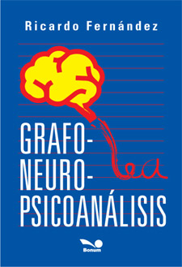

Grafo-Neuro-Psicoanálisisººº
|
|
|
|
 |
Introducción
No hay mente sin cerebro.
El cerebro es un órgano, la mente es la manera de funcionar.
La mente es el trabajo del sistema nervioso, de crear su propia forma
de ver el mundo y actuar sobre él.
En el libro se van a desarrollar las particularidades del funcionamiento del
cerebro, las diferencias entre cerebro masculino y femenino, con ejemplos de
escritos que los muestran.
Los procesos conscientes e inconscientes, los mecanismos de defensa, los
períodos de evolución sexual, etc. Todo tiene repercusión en el cerebro. No
todo lo que ocurre allí, puede pasar a la consciencia.
Todas las ciencias que se ocupan de entender al hombre, pueden encontrar en
la Grafología una herramienta que le puede brindar muchos aportes, de
acuerdo al objetivo que tenga cada una de ellas.
Este libro abarca diversas escuelas de Psicoanálisis y su aporte al
campo de la psicología. Las teorías de Freud, Jung, Melanie Klein, Adler,
los fundamentos psicológicos, la relación con el funcionamiento cerebral y
el detalle de cómo se pueden observar esas características en escritos.
Finaliza con un escrito en el que se estudia la integración de las teorías
vistas.
Las Neurociencias hoy deben ser tenidas en cuenta, ya que los avances
que se han dado en los últimos veinticinco años, producto de toda la
tecnología disponible, han explicado muchos de los interrogantes que siempre
se tuvieron.
Freud en su trabajo “Proyecto de una psicología para neurólogos” del año
1895, ya nos enseñaba que “la actividad psíquica ésta ligada a la función
del cerebro”.
En ese artículo pensaba Freud, que algo faltaba en la explicación que había
hasta ese momento, sobre el funcionamiento de las neuronas. Pasaba algo que
aún no se sabía. Noventa años después, se descubre que la sinapsis neuronal,
no es sólo eléctrica como se sostenía, sino también química.
Esto cambia todo lo pensado hasta ese período, el componente químico, es lo
que hoy se llaman neurotransmisores y estos llevan toda la información, que
tiene que ver con las emociones que se sienten.
El funcionamiento de la mente (de lo que se ocupa el psicoanálisis y otras
escuelas de psicología); tiene su casa en el cerebro (de lo que se ocupa la
neurología). La manifestación de la mente y el cerebro, son los trazos que
se ven reflejados en el papel escrito (de lo que se ocupa la grafología).
De allí que se puede desprender el término: GrafoNeuroPsicoanálisis. |
Participación
en la Feria Internacional del Libro
Feria del Libro 2018
Stand de Editorial Bonum.
|
|